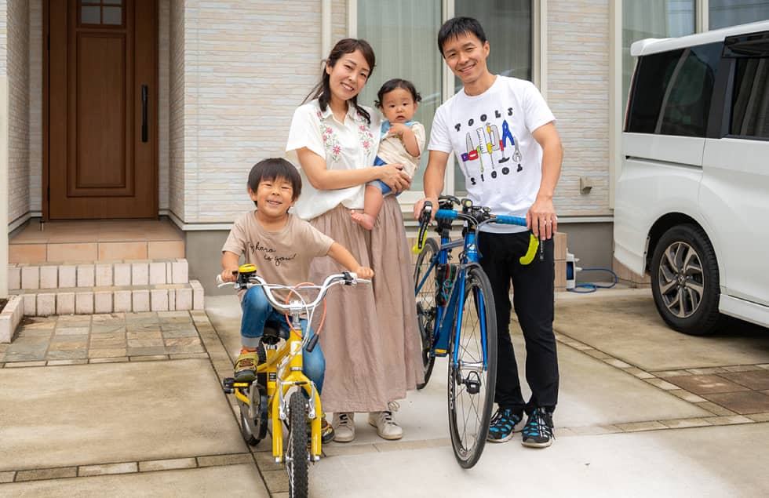
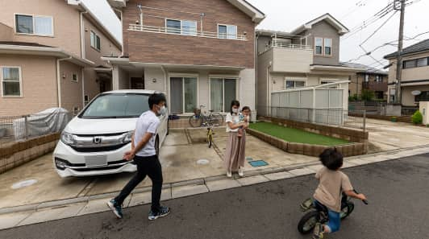

Interview
グランシア狭山ご購入者
H様 ご夫婦
狭山市広瀬東の暮らし

分譲地内の開発道路のため、車通りも少なくて安心！
1.家探しをはじめたきっかけは？
ご主人もともとは鵜木の賃貸アパートに暮らしていたのですが、上の子供が大きくなるにつれて手狭になってきたので、軽い気持ちで家探しを始めました。当初はマンションか戸建かも決めておらず、ただネットサーフィン的な感覚で情報サイトを眺めていたのですが、眺めているうちにだんだんと戸建てが欲しくなってきてしまったのです。とういうのも、子どもの出す騒音が、下の階や隣の部屋の方に迷惑をかけてしまうのではないかという心配があったのと、収納スペースの豊富さを求めたからです。
奥様いくつか建売の戸建てを案内してもらったのですが、色々な建物を見ているうちに、「あそこはこうがいい」「ここはこうがいいよね」なんて次々とこだわりが出てきてしまって、なかなか理想の建物に出会うことができませんでした。なので、注文住宅の方が私たちのスタイルにあった家に出会えるのかななんて思い、ハウスメーカー選びを始めました。
分譲地内の開発道路のため、車通りも少なくて安心！